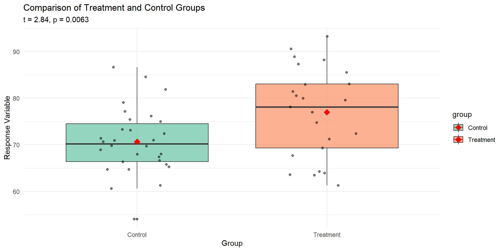

t.test(DepSample$AFTER, DepSample$BEFORE,
alternative='two.sided',
conf.level=.95,
paired=TRUE)Chapter 09: Two-Sample Hypothesis Tests
1 Comparisons of Means
1.1 Introduction
Objective: Test whether the population means \(\mu_A\) and \(\mu_B\) of either dependent or independent samples differ by a hypothesized quantity \(D_0 = \mu_B - \mu_A\).
Frequently, the difference is assumed zero under the null hypothesis \(D_0 = 0\).
The null and the alternative hypotheses are:
| \(D_0 = 0\) | \(D_0 \neq 0\) | |||
|---|---|---|---|---|
| \(H_0\) | \(H_1\) | \(H_0\) | \(H_1\) | |
| two sided | \(H_0: \mu_A = \mu_B\) | \(H_1: \mu_A \neq \mu_B\) | \(H_0: \mu_A - \mu_B = D_0\) | \(H_1: \mu_A - \mu_B \neq D_0\) |
| one-sided | \(H_0: \mu_A \leq \mu_B\) | \(H_1: \mu_A > \mu_B\) | \(H_0: \mu_A - \mu_B \leq D_0\) | \(H_1: \mu_A - \mu_B > D_0\) |
| \(H_0: \mu_A \geq \mu_B\) | \(H_1: \mu_A < \mu_B\) | \(H_0: \mu_A - \mu_B \geq D_0\) | \(H_1: \mu_A - \mu_B < D_0\) |
1.2 Study Designs to Compare Means

In the related/matched sample design the means within cases before (time \(t_A\)) and after the treatment (time \(t_B\)) are compared (green arrows).
In the independent sample design, the cases which received treatment are compared (blue arrow) against the controls, which have not received the treatment, at time \(t_B\).
In either scenario, sampling is performed from the same baseline population which has not been exposed to a treatment.
Thus, the variances of the cases and controls should be identical because both come from the same population.
1.3 Two-Sample Test Decision Rules

The decision tree shows:
- Study Design splits into:
- Matched Pairs:
- Normal Differences → One-Sample t-test
- Non-normal Differences → Sign-Test for Median or Wilcoxon
- Two Sample:
- Non-normal Samples → Mann-Whitney test
- Normal Samples:
- Equal Variance → Two-sample t-Test
- Unequal Variance → Adjusted Two-sample t-Test
- Matched Pairs:
2 Two Related Samples (Matched Pairs)
2.2 The Test Statistic for Matched Pairs
2.2.1 Gain Score
The two measurements at \(t_A\) and \(t_B\) for the \(i^{th}\) observation can be expressed by the gain score \(D_i\) as difference:
\[D_i = X_{iA} - X_{iB}\]
2.2.2 Mean of Differences
The test statistic becomes:
\[\bar{D} = \frac{\sum_{i=1}^{n} D_i}{n}\]
2.2.3 Standard Error
The standard error of the average gain \(\bar{D}\) is \(s_D / \sqrt{n}\) with the estimator of the variance being:
\[s_D^2 = \frac{\sum_{i=1}^{n} (D_i - \bar{D})^2}{n-1}\]
Why is the division of \(s_D\) by \(\sqrt{n}\) performed?
2.2.4 t-Statistic
The test statistic becomes:
\[t = \frac{\bar{D} - D_0}{s_D / \sqrt{n}}\]
and for \(D_0 = 0\) it reduces to:
\[t = \frac{\bar{D}}{s_D / \sqrt{n}}\]
Assuming the sample measurements come from a population that satisfies the null hypothesis, then the test statistic will follow a t-distribution with \(n - 1\) degrees of freedom.
The test is equivalent to the one-sample test of the mean \(H_0: \mu_D = D_0\).
2.2.5 Definition: Sampling Distribution of Paired-Observation Mean \(\bar{D}\)
Assume \(X_1\) and \(X_2\) are normal with a difference in means \(\mu_1 - \mu_2 = D_0\). Given a random sample of \(n\) paired observations, the following has an approximate \(t\)-distribution:
\[T = \frac{\bar{D} - D_0}{S_d / \sqrt{n}}\]
with \(n - 1\) degrees of freedom.
2.4 Example: Everitt’s Anorexia Data

Investigate the data organization of the data-frames DEPSAMPLE and INDEPSAMPLE
Note: Both measurements on the same girl are positively correlated (positive slope of the green line).
Note: There is an apparent weight gain (above red dashed identity line).
Note: The 4 observations in the lower left corner may be special cases, because these low weight girls (< 83 pounds) lose weight (red dashed line) even after treatment.
2.4.1 Performing the Paired t-test in R
Output:
Paired t-test
data: DepSample$AFTER and DepSample$BEFORE
t = 4.1849, df = 16, p-value = 0.0007003
alternative hypothesis: true difference in means is not equal to 0
95 percent confidence interval:
3.58470 10.94471
sample estimates:
mean of the differences
7.264706Important: The order of both variables matters!
3 Two Independent Samples
3.1 Overview
In the two-independent sample design, we distinguish between a case group that has been exposed to a particular treatment and the control group remains unexposed to the treatment. We want to test for the effect of the treatment on the case group compared to the control group.
The members of the case and the control groups were randomly sampled from a common population and randomly assigned to either group. Thus, we can assume a common variance.
Both sample groups can be of different sizes.
3.2 The Test Statistic for Independent Samples
3.2.1 The Standard Error Problem
The key problem of developing the test statistic lies in the evaluation of its standard error.
While both samples, under the null hypothesis, come from the same population and, therefore, should have identical variances:
- The different sample sizes of the cases and controls complicate the estimation of the variance from the sample observations
- The treatment of the cases compared to the missing treatment of controls may also induce a change in the variance of the case and control group.
3.2.2 Variance of Difference of Means
Theoretically, for subtraction or addition of independent means, their joint variance is equal to their sums:
\[\sigma_{\bar{X}_A \pm \bar{X}_B}^2 = \sigma_{\bar{X}_A}^2 + \sigma_{\bar{X}_B}^2 = \frac{\sigma_A^2}{n_A} + \frac{\sigma_B^2}{n_B}\]
3.3 Pooling Variances
3.3.1 The Problem with Simple Averaging
The expression for the standard error of the difference of means:
\[s_{\bar{X}_A - \bar{X}_B} = \sqrt{\frac{s_A^2}{n_A} + \frac{s_B^2}{n_B}}\]
weights each sample variance equally, which is misleading if the sample sizes differ substantially, e.g., \(n_A \neq n_B\).
3.3.2 The Pooled Variance Estimator
A better estimate is the pooled variance estimator which employs differential weights:
\[s_{pooled}^2 = \frac{\sum_{i=1}^{n_A}(X_{iA} - \bar{X}_A)^2 + \sum_{j=1}^{n_B}(X_{jB} - \bar{X}_B)^2}{n_A + n_B - 2}\]
This can also be written as:
\[s_{pooled}^2 = \frac{(n_A - 1) \cdot s_A^2 + (n_B - 1) \cdot s_B^2}{n_A + n_B - 2}\]
3.3.3 The Two-Sample t-Test Statistic
The test statistic becomes:
\[t = \frac{(\bar{X}_A - \bar{X}_B) - D_0}{\sqrt{s_{pooled}^2} \cdot \sqrt{\frac{1}{n_A} + \frac{1}{n_B}}}\]
where \(\sqrt{\frac{1}{n_A} + \frac{1}{n_B}}\) accounts for the shrinkage of the standard error based on the sample size.
3.3.4 Definition: Sampling Distribution of \(\bar{X}_1 - \bar{X}_2\), Equal Population Variances
Assume \(X_1\) and \(X_2\) are normal with a difference in means \(\mu_1 - \mu_2 = D_0\). If the variance \(\sigma^2\) is the same for both populations, then the following has a \(t\)-distribution:
\[T = \frac{\bar{X}_1 - \bar{X}_2 - D_0}{\hat{\sigma}_{\bar{X}_1 - \bar{X}_2}} = \frac{\bar{X}_1 - \bar{X}_2 - D_0}{S_p\sqrt{1/n_1 + 1/n_2}}\]
with degrees of freedom:
\[df = n_1 + n_2 - 2\]
4 Heterogeneity of Variances
4.1 When Variances Are Equal
We can usually assume that the treatment just shifts the mean level without affecting the variance.
Therefore, the test statistic \(t\) follows a t-distribution with \(n_A + n_B - 2\) degrees of freedom.
4.2 When Variances Are Unequal (Fisher-Behrens Problem)
However, if this assumption is incorrect then difficulties arise (see the Fisher-Behrens problem).
Several conservative adjustments are proposed in the literature.
Conservative means: the actual error probability of mistakenly rejecting a true null hypothesis is smaller than the nominal level \(\alpha\).
This implies that we are on the safe side and if the null hypothesis is rejected, the true error probability is smaller than the nominal error probability \(\alpha\).
4.2.1 Adjustments for Degrees of Freedom
Two proposed adjustments are used for the degrees of freedom of the \(t\)-test:
The smaller of the two numbers \((n_A - 1)\) or \((n_B - 1)\), or
Welch-Satterthwaite approximation:
\[df \approx \frac{(S_A^2/n_A + S_B^2/n_B)^2}{(S_A^2/n_A)^2/(n_A-1) + (S_B^2/n_B)^2/(n_B-1)}\]
4.2.2 Definition: Sampling Distribution of \(\bar{X}_1 - \bar{X}_2\), Population Variances Unequal
Assume \(X_1\) and \(X_2\) are normal with a difference in means \(\mu_1 - \mu_2 = D_0\) and variances \(\sigma_1^2 \neq \sigma_2^2\). Then the following has an approximate \(t\)-distribution:
\[T = \frac{\bar{X}_1 - \bar{X}_2 - D_0}{\hat{\sigma}_{\bar{X}_1 - \bar{X}_1}} = \frac{\bar{X}_1 - \bar{X}_2 - D_0}{\sqrt{S_1^2/n_1 + S_2^2/n_2}}\]
with degrees of freedom given by:
\[df = \frac{(S_1^2/n_1 + S_2^2/n_2)^2}{(S_1^2/n_1)^2/(n_1-1) + (S_2^2/n_2)^2/(n_2-1)}\]
Alternatively, the (approximate) degrees of freedom can be found from:
\[df = \min(n_1 - 1, n_2 - 1)\]
4.3 Impact of the Deviation from the Underlying Assumptions
See the script tTestSimulation.r for an investigation on how violations of the standard assumptions [a] normality and [b] equality of variances affect the significance levels of the t-test.
5 Test for the Equality of Variances / Homoscedasticity
5.1 Formulating the Hypothesis
The specification of the two-sample difference-of-means test depends on whether \(\sigma_1^2 = \sigma_2^2\) or \(\sigma_1^2 \neq \sigma_2^2\).
The two-sided hypothesis is formulated in terms of ratios:
\[H_0: \frac{\sigma_1^2}{\sigma_2^2} = 1 \quad \text{against} \quad H_A: \frac{\sigma_1^2}{\sigma_2^2} \neq 1\]
5.2 The F-Distribution
5.2.1 Definition: Sampling Distribution of the Ratio of Variances
Assume \(X_1\) and \(X_2\) are both normally distributed, with variances \(\sigma_1^2\) and \(\sigma_2^2\). Given independent random samples of size \(n_1\) and \(n_2\), then the statistic:
\[F = \frac{S_1^2/\sigma_1^2}{S_2^2/\sigma_2^2}\]
will follow an F distribution with \(n_1 - 1\) and \(n_2 - 1\) degrees of freedom.
5.2.2 Test Statistic Under Null Hypothesis
Because under the null hypothesis \(H_0\) the population variance is identical, the test statistic becomes:
\[F = \frac{S_1^2}{S_2^2}\]
6 Analysis of the Everitt’s Anorexia Example
6.1 Comparison of Sample Variances (F-test)
var.test(GAIN ~ Treatment, alternative='two.sided', conf.level=.95,
data=IndepSample)Output:
F test to compare two variances
data: GAIN by Treatment
F = 0.8027, num df = 16, denom df = 25, p-value = 0.6587
alternative hypothesis: true ratio of variances is not equal to 1
95 percent confidence interval:
0.3367083 2.0981634
sample estimates:
ratio of variances
0.8027132Conclusion: We cannot reject \(H_0: \frac{\sigma_A^2}{\sigma_B^2} = 1\) and therefore tentatively assume equal variances.
6.2 Two-Sample t-Test (Assuming Equal Variances)
The t-test assuming identical variances (see option var.equal=TRUE) of a two-sided null hypothesis \(H_0: \mu_{case} = \mu_{control}\) is accomplished by:
t.test(GAIN ~ Treatment, alternative='two.sided', conf.level=.95,
var.equal=TRUE, data=IndepSample)Output:
Two Sample t-test
data: GAIN by Treatment
t = 3.2227, df = 41, p-value = 0.002491
alternative hypothesis: true difference in means is not equal to 0
95 percent confidence interval:
2.880164 12.549248
sample estimates:
mean in group Case mean in group Control
7.264706 -0.450000Note: Use var.equal=FALSE if the F-test indicates heteroscedasticity (i.e., reject the null hypothesis).
6.3 Equivalent Regression Approach
Alternatively, we could have achieved the same results with a regression model that uses TREATMENT as a dummy variable:
lm(formula = GAIN ~ Treatment, data = IndepSample)Output:
Call: lm(formula = GAIN ~ Treatment, data = IndepSample)
Coefficients:
Estimate Std. Error t value Pr(>|t|)
(Intercept) 7.265 1.861 3.903 0.000347 ***
Treatment[T.Control] -7.715 2.394 -3.223 0.002491 **
Residual standard error: 7.675 on 41 degrees of freedom
Multiple R-squared: 0.2021, Adjusted R-squared: 0.1827
F-statistic: 10.39 on 1 and 41 DF, p-value: 0.0024916.3.1 Interpretation
This model implies for:
Cases: \(GAIN = 7.265 + \underbrace{0}_{Treatment=0} \cdot (-7.715) = 7.265\)
Controls: \(GAIN = 7.265 + \underbrace{1}_{Treatment=1} \cdot (-7.715) = -0.45\)
7 R Code Examples
7.1 Paired t-Test
# Simulated paired data (before/after treatment)
set.seed(123)
n <- 20
before <- rnorm(n, mean = 80, sd = 10)
effect <- rnorm(n, mean = 5, sd = 3) # Treatment effect
after <- before + effect
# Calculate gain scores
D <- after - before
D_bar <- mean(D)
s_D <- sd(D)
cat("Mean difference:", round(D_bar, 3), "\n")Mean difference: 4.846 cat("SD of differences:", round(s_D, 3), "\n")SD of differences: 2.49 # Paired t-test
t_stat <- D_bar / (s_D / sqrt(n))
p_value <- 2 * pt(-abs(t_stat), df = n - 1)
cat("t-statistic:", round(t_stat, 3), "\n")t-statistic: 8.705 cat("p-value:", round(p_value, 4), "\n")p-value: 0 # Using t.test function
t.test(after, before, paired = TRUE)
Paired t-test
data: after and before
t = 8.7047, df = 19, p-value = 4.679e-08
alternative hypothesis: true mean difference is not equal to 0
95 percent confidence interval:
3.680959 6.011498
sample estimates:
mean difference
4.846229 7.2 Independent Two-Sample t-Test
# Simulated independent samples
set.seed(456)
n_A <- 25
n_B <- 30
# Case group (received treatment)
group_A <- rnorm(n_A, mean = 75, sd = 8)
# Control group
group_B <- rnorm(n_B, mean = 70, sd = 8)
# Calculate sample statistics
x_bar_A <- mean(group_A)
x_bar_B <- mean(group_B)
s_A <- sd(group_A)
s_B <- sd(group_B)
cat("Group A: mean =", round(x_bar_A, 2), ", sd =", round(s_A, 2), "\n")Group A: mean = 76.99 , sd = 9.5 cat("Group B: mean =", round(x_bar_B, 2), ", sd =", round(s_B, 2), "\n")Group B: mean = 70.65 , sd = 7.02 # Pooled variance
s_pooled_sq <- ((n_A - 1) * s_A^2 + (n_B - 1) * s_B^2) / (n_A + n_B - 2)
s_pooled <- sqrt(s_pooled_sq)
cat("Pooled SD:", round(s_pooled, 3), "\n")Pooled SD: 8.238 # t-statistic
se <- s_pooled * sqrt(1/n_A + 1/n_B)
t_stat <- (x_bar_A - x_bar_B) / se
df <- n_A + n_B - 2
p_value <- 2 * pt(-abs(t_stat), df = df)
cat("t-statistic:", round(t_stat, 3), "\n")t-statistic: 2.843 cat("Degrees of freedom:", df, "\n")Degrees of freedom: 53 cat("p-value:", round(p_value, 4), "\n")p-value: 0.0063 # Using t.test function (equal variances)
t.test(group_A, group_B, var.equal = TRUE)
Two Sample t-test
data: group_A and group_B
t = 2.8426, df = 53, p-value = 0.00634
alternative hypothesis: true difference in means is not equal to 0
95 percent confidence interval:
1.866869 10.815440
sample estimates:
mean of x mean of y
76.98851 70.64735 7.3 F-Test for Equality of Variances
# Test for equality of variances
var.test(group_A, group_B)
F test to compare two variances
data: group_A and group_B
F = 1.8293, num df = 24, denom df = 29, p-value = 0.1216
alternative hypothesis: true ratio of variances is not equal to 1
95 percent confidence interval:
0.8492353 4.0562745
sample estimates:
ratio of variances
1.829258 # Manual calculation
F_stat <- var(group_A) / var(group_B)
df1 <- n_A - 1
df2 <- n_B - 1
p_value_F <- 2 * min(pf(F_stat, df1, df2), 1 - pf(F_stat, df1, df2))
cat("\nManual F-test:\n")
Manual F-test:cat("F-statistic:", round(F_stat, 3), "\n")F-statistic: 1.829 cat("p-value:", round(p_value_F, 4), "\n")p-value: 0.1216 7.4 Welch’s t-Test (Unequal Variances)
# When variances are unequal
set.seed(789)
group_C <- rnorm(20, mean = 50, sd = 5) # Small variance
group_D <- rnorm(25, mean = 55, sd = 15) # Large variance
# F-test shows unequal variances
var.test(group_C, group_D)
F test to compare two variances
data: group_C and group_D
F = 0.072619, num df = 19, denom df = 24, p-value = 2.725e-07
alternative hypothesis: true ratio of variances is not equal to 1
95 percent confidence interval:
0.03096559 0.17808527
sample estimates:
ratio of variances
0.07261907 # Welch's t-test (default in R)
t.test(group_C, group_D, var.equal = FALSE)
Welch Two Sample t-test
data: group_C and group_D
t = -2.2132, df = 28.261, p-value = 0.03513
alternative hypothesis: true difference in means is not equal to 0
95 percent confidence interval:
-11.9794693 -0.4656552
sample estimates:
mean of x mean of y
48.44991 54.67247 # Compare with equal variance assumption (incorrect)
t.test(group_C, group_D, var.equal = TRUE)
Two Sample t-test
data: group_C and group_D
t = -2.0058, df = 43, p-value = 0.0512
alternative hypothesis: true difference in means is not equal to 0
95 percent confidence interval:
-12.47899089 0.03386638
sample estimates:
mean of x mean of y
48.44991 54.67247 7.5 Visualization: Comparing Groups
library(ggplot2)
# Create data frame for visualization
df <- data.frame(
value = c(group_A, group_B),
group = factor(c(rep("Treatment", n_A), rep("Control", n_B)))
)
# Side-by-side boxplots
ggplot(df, aes(x = group, y = value, fill = group)) +
geom_boxplot(alpha = 0.7) +
geom_jitter(width = 0.2, alpha = 0.5) +
stat_summary(fun = mean, geom = "point", shape = 18, size = 4, color = "red") +
labs(title = "Comparison of Treatment and Control Groups",
subtitle = paste0("t = ", round(t_stat, 2), ", p = ", round(p_value, 4)),
x = "Group",
y = "Response Variable") +
theme_minimal() +
scale_fill_brewer(palette = "Set2")
Note: This document was converted from lecture slides for GISC6301 Geo-spatial Data Fundamentals (Fall 2025) by Tiefelsdorf.